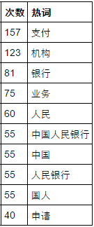

政府工作报告的高频词汇
今天学了一招，找一下政府工作报告里高频出现的词汇，说不定能帮助炒股呢！（肯定是错觉。。）
其实就是一个简单的爬虫。首先，先把工作报告的内容抓下来：
#-*- coding: utf-8 -*-
import sys
import jieba
import requests
from bs4 import BeautifulSoup
#导入需要的包
def extract_text(url):
page_source=requests.get(url).content
bs_source=BeautifulSoup(page_source)
report_text=bs_source.find_all('p')
text=''
for p in report_text:
text+=p.get_text()
text+='\n'
return text
#这个函数返回的就是政府工作报告的内容了。然后就是统计词频，排名后输出前十了（需要用到Counter函数）：
def word_frequency(text):
from collections import Counter
word=[word for word in jieba.cut(text,cut_all=True) if len(word)>=2]
#找到长度大于等于2的词
c=Counter(word) #数一下。。
f = open('shuju.txt', 'w')
f.write(str(c.most_common(10)).decode('unicode_escape').encode('utf-8'))
f.close()
#可以把结果输出到一个文本文件里，记得编码，否则又乱码。。
for word_freq in c.most_common(10):
word,freq=word_freq
print (word, freq)url_2016='http://www.gov.cn/flfg/2010-06/21/content_1632796.htm'
text_2016=extract_text(url_2016)
word_frequency(text_2016)这样就能看到结果，不过可以再处理一下：
#-*- coding: utf-8 -*-
import pandas as pd
import re
f=file('shuju.txt','r')
data=f.readlines()
f.close()
line=data[0]
result1=re.findall('\'(.*?)\'',line,flags=re.IGNORECASE)
result2=re.findall('[0-9]{2,3}',line)
data2=pd.DataFrame(result2,index=range(10),columns=['次数'])
data2['热词']=pd.Series(result1,index=range(10))
data2['次数']=data2['次数'].astype(int)
print data2